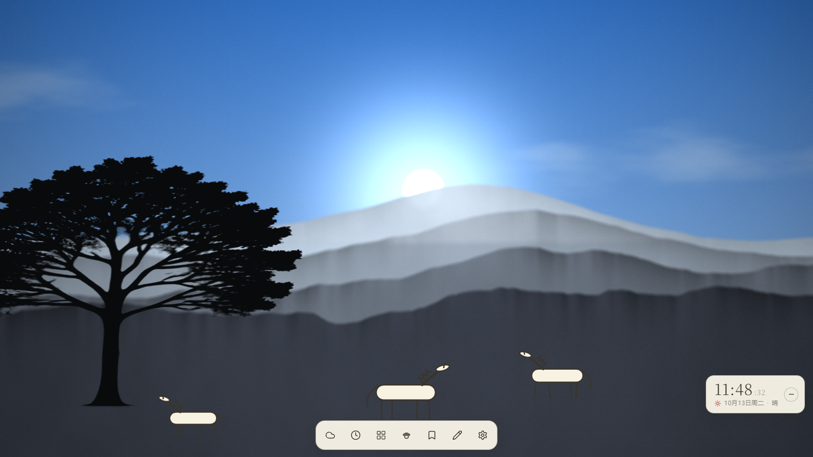
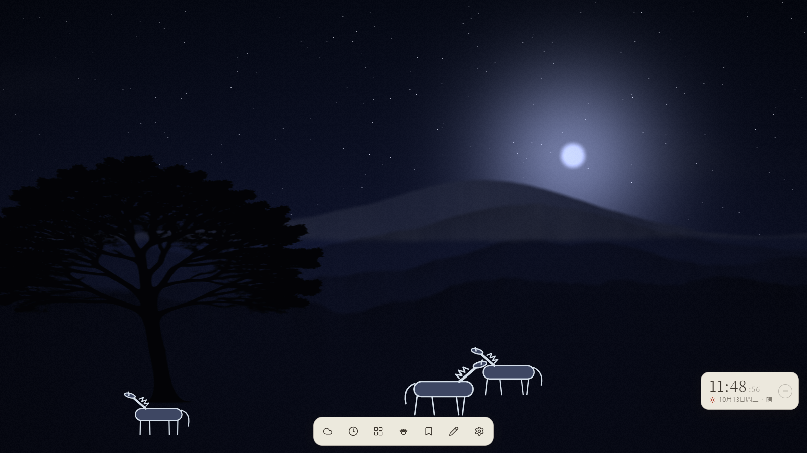
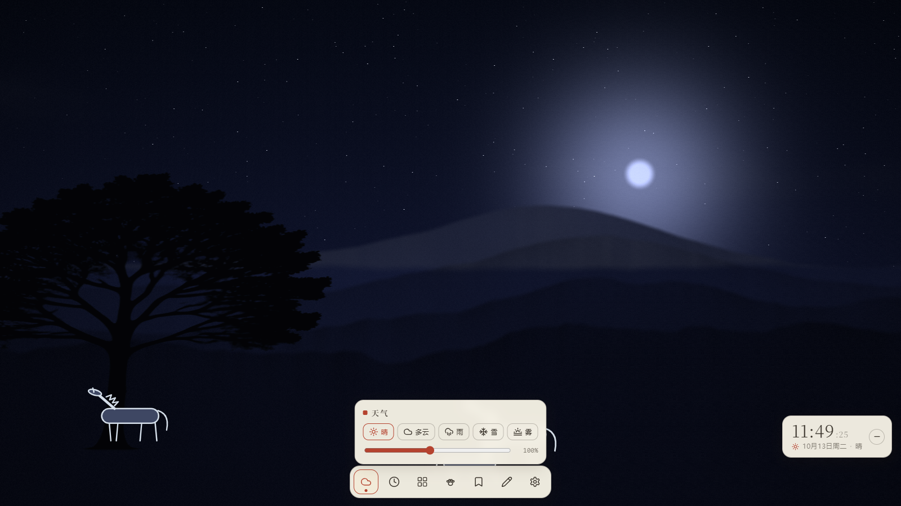

至日 Solstice
会"活着"的环境感知场景：真实时辰光照（按你的纬度计算日出日落）· 深度视差 · 精灵宠物（开发中）。AI 仅用于离线生成素材，运行时零 AI 调用。 当前为 M1 程序化 / 简笔画场景；优美线素材按目标帧合同生产落地后，自动切换为"图片 + 深度图"视差模式。



URL 参数：?hour=0-24 强制时辰 · ?debug=1 调试面板 · ?fps=60 解锁帧率 · ?par=150 视差强度 · ?lat=39.9 纬度